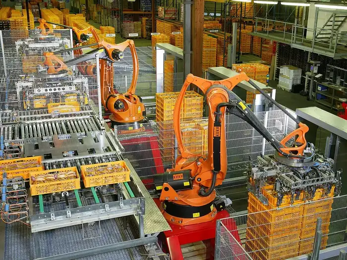
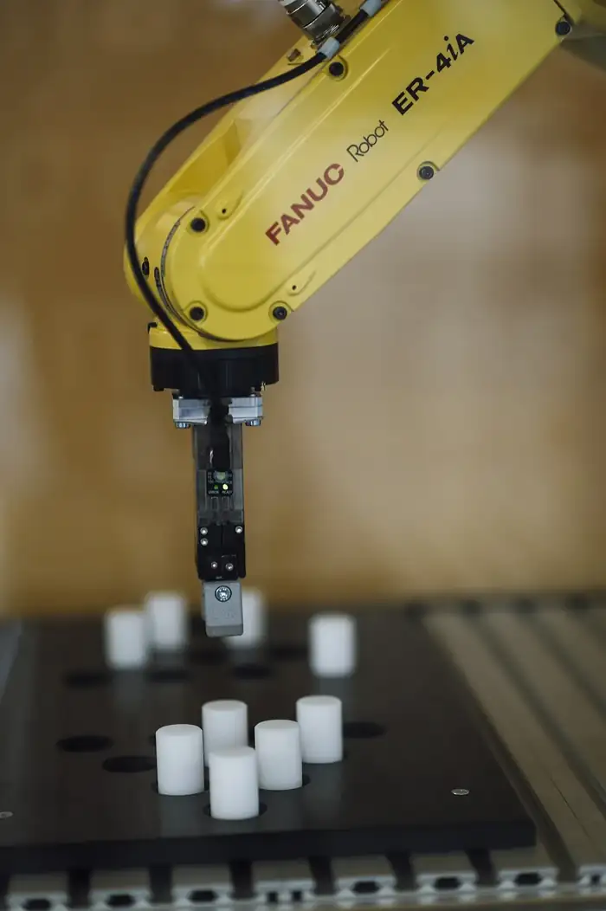
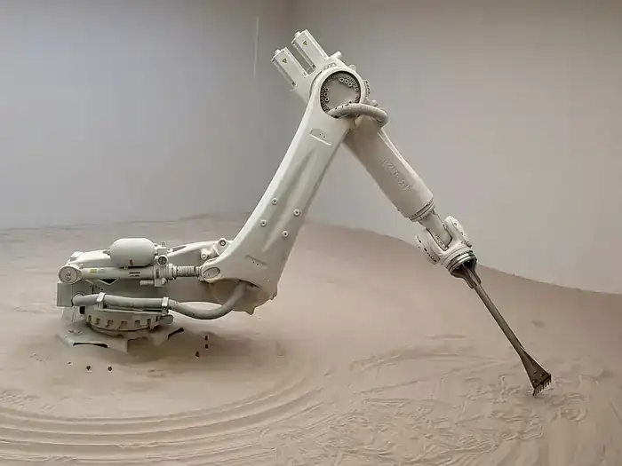

The two positions
The sceptical position rests on the 'lump of labour' fallacy: there is not a fixed amount of work to be shared, and displaced workers are reabsorbed as demand and new industries grow. Two hundred years of evidence support this as the normal pattern.
Maps, diagrams and images






The pessimistic position notes that the historical reabsorption took decades, that it hurt specific people badly, and that it depended on new tasks being created for humans. If machines can do the new tasks too, the mechanism that restored equilibrium may not operate.
What the research shows
Task-based frameworks (Autor, Acemoglu, Restrepo) model automation as replacing tasks rather than occupations, with productivity gains and new task creation partly offsetting displacement. Empirically, the US has seen polarisation: middle-skill routine work has hollowed out while both high-skill and low-skill service work grew.
The current evidence on AI is early and mixed. Studies find productivity gains in specific tasks — customer support, coding assistants — and little clear aggregate employment effect so far, which is what one would expect at this stage.
Watch: whether new-task creation keeps pace, whether gains are concentrated in a few firms, and whether the transition is fast enough to outrun institutional adaptation.
Beware: predictions with dates. 'Most jobs gone by 2030' has been published in every decade since the 1930s and has not happened on schedule.
Remember: distribution matters more than the total. Even if employment is fine, the composition and the bargaining power can shift severely, as they did in the 1980s.
The archive labels this live debate because the historical pattern is documented and its continuation is not.
Why it is in the archive
Because it is a case where the naive version (machines take all jobs) and the dismissive version (it never happened before, so it can't) are both weaker than the actual research programme.
Related: AI risk, the Jevons paradox.
Sources for this page
- Wikipedia, “Technological unemployment” — history and theoryen.wikipedia.org
- Autor (2015), Journal of Economic Perspectives — why are there still so many jobs?doi.org
- Acemoglu & Restrepo (2019), Journal of Economic Perspectives — automation and new tasksdoi.org
- Wikipedia, “Lump of labour fallacy” — the standard objectionen.wikipedia.org
Open resources on this topic
- BookThe technological unemployment and structural unemployment debates — Woirol, Gregory R. (Gregory Ray), 1948- · 1996 (Internet Archive, free to read)
- BookAnalysis Regarding the Approach of the aspects of Resilience in the Implementation of Industry 4.0, for Employ (Internet Archive, free to read)
- Book2003. Yood, Man Vs. The Machine. Giant Brains, Computer Automation And Fears Of Technological Unemployment, 19 — Charles N. Yood · 2003 (Internet Archive, free to read)
- PapersOpen-access articles: DOAJ · PubMed Central · Internet Archive Scholar
- BooksPublic-domain and borrowable copies: Open Library · Project Gutenberg · Google Books
Cite this page
Momin, S. (2026). Technological Unemployment. The Larger World Archive. https://drsamonline.github.io/LARGE_GLOBE/technological-unemployment.htmlMomin, Sohil. “Technological Unemployment.” The Larger World Archive, 2026, https://drsamonline.github.io/LARGE_GLOBE/technological-unemployment.html.Momin, Sohil. “Technological Unemployment.” The Larger World Archive, 2026. https://drsamonline.github.io/LARGE_GLOBE/technological-unemployment.html.@misc{technological2026technological,
author = {Momin, Sohil},
title = {Technological Unemployment},
year = {2026},
howpublished = {The Larger World Archive},
url = {https://drsamonline.github.io/LARGE_GLOBE/technological-unemployment.html},
note = {Last reviewed 20 November 2026}
}Last reviewed 20 November 2026 · Corrections policy · this page is not peer reviewed